Interludes and quietudes “Interludes and quietudes”承认发生在大思想之间的生活中较小的事件。 每幅肖像都探索了章节之间的停顿。 一个存在于当下的时间。 通
International Communication Ape 在一个绿色的人猿星球上，有 9999 只猿在自己的土地上战斗，创造了猿人时代。 繁衍不断，战争不断，各种对死亡的恐惧，他们正式出动国际社会猿，呼吁和平解
Internet Made 一个人造时装工作室，将过去的时尚参考与新的数字叙事联系起来，反映了我们成长的数字 Mise-en-scène。Internet Made Genesis NFT - 常见问题
Intersectional Abstraction Intersection Abstraction 是限量发行的高分辨率手绘 4k 冥想作品，探讨了创造我们的有机宇宙与我们自己创造的数字宇宙之间的关系。交叉抽象 NFT - 常见问题（FAQ） ▶ 什么是交
Into the Cryptoverse by 0xSynergy 未来，基于 AI 的 NFT 艺术家集体将风靡一时。该集体由使用区块链技术创作数字艺术的 AI 艺术家组成。我们使用算法创造美丽而独特的艺术品。每件艺术品都是独
Introverse Citizenship Introverse 由以太坊区块链上的 1,555 个 Boobles 组成。我们是一个社区和一个运动，其中心是为所有内向的公民在他们生活的不同方面增加价值。内向公民 NFT - 常见问题（FAQ
inVADERs Army NFT InVaders 是由人工智能在 2,055 年生成的 55,555 名独特的维京战士，一半是人类，一半是半机械人。宇宙的和平是不确定的，敌人的 Dump Beder 无情地前进。入侵者已准备好保卫行星
Invaders Spaceships 2021 年 9 月 10 日，五角大楼发布了 Gray Disclosures 51 论文。它证实了我们中间存在外星人，他们小心翼翼地伪装成平民。他们的目标：全面入侵和殖民地球（那是我们的星球
Inverted Ape Club Inverted Ape Club是可证明公平的 BAYC 衍生作品。拥有一个 Inverted Ape 可以从 Luego Labs 无限期发布的每个基于以太坊的 Solidity 项目中获得特权。 10K 独特的猿类，倒置。倒立猿只能铸造
InvertedInuCoterie Inverted Ape 替代元节的第一次扩展，Inverted Inu Coterie 是无聊猿养犬俱乐部的可证明公平的衍生产品。适用的二次销售的 1% 给相应的 BAKC 狗持有人，1% 给相应的倒
InvestMan_JustForFun InvestMan_JustForFun NFT - 常见问题（FAQ） ▶ 什么是 InvestMan_JustForFun？ InvestMan_JustForFun 是一个 NFT（替代币）集合存储。不可在区块链上的数字收藏品集合。
Invisibears 5,000 只隐形熊在 ETH 区块链上徘徊。灵感来自 Invisible Friends & Okay Bears。我们不隶属于任何其他项目。Invisibears NFT - 常见问题（FAQ） ▶ 什么是 Inv
Invisible 3Landers 隐形 3Landers 统计数据 过去 7 天没有售出 Invisible 3Landers。 没有不和谐。没有路线图。只是共鸣。 Invisible 3Landers NFT - 常见问题（FAQ） ▶ 什么是隐形 3Landers？
Invisible Foes Invisible Degen Foes 是一个 Community Ran 集合，由 6,666 个随机生成的隐形角色组成，这些角色生活在以太坊区块链上，不是你的朋友。Invisible Degen Foes NFT - 问题常见（FAQ）
Invisible Frens “Invisible Frens”是存储在以太坊区块链上的 6001 个独特的、生成的 PFP 主题 NFT 的集合。 一旦售罄，我们将持有持有人赠品，以赢取 Markus Magnusson 真正的 Invisible
Invisible Friends 隐藏在元宇宙中。 Invisible Friends 是由 Markus Magnusson 创作的 5000 个动画隐形角色的集合。 隐形朋友是一个随机角色集体项目。隐形朋友 NFT - 常见问题（FAQ） ▶ 什么是隐形朋友？ Invisible
Invisible Friends By Magnusson 隐藏在元宇宙中。 Invisible Friends 是由 Markus Magnusson 创作的 5000 个动画隐形角色的集合。 隐形朋友是一个随机角色集体项目。 什么，谁，在哪里？KITH 隐形朋友，真的吗？那是什
Invisible Friends Official 什么，谁，在哪里？KITH 隐形朋友，真的吗？那是什么？五月你就知道了。持有人的优先访问权。在夏季结束时，所有 IF 持有者将有机会铸造一个由 Nguyen Nhut 制
Invisible Kevins NFT 首款由女性主导的 Kevin NFT 2222 手绘隐形凯文在海滩度假 - 没有路线图 - 没有实用工具 - 只有 kevins。过去 7 天没有出售 Invisible Kevins NFT。 隐形凯文斯 NFT NFT - 常见问
Invisible Mfers Invisible Mfers NFT - 常见问题（FAQ） ▶ 什么是隐形Mfer？ Invisible Mfers 是一个 NFT（Non-fungible token）存储。在区块链上的数字收藏品集合。 ▶ 存
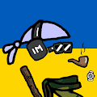 Invisible Mfers from Ukraine 正如 Sartoshi 所说，“没有国王、统治者或明确的路线图——mfer 可以用这些 mfer 构建他们能想到的任何东西”。 在阅读了这些台词之后，我和我最好的朋友决定为
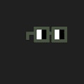 Invisible Noun 过去 7 天没有出售隐形名词。 实用程序发送到 0xDEAD 但隐形名词将永远存在存储在区块链上。 隐形名词 NFT - 常见问题（FAQ） ▶ 什么是隐形名词？ Invisible Noun 是一个 NF
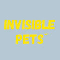 Invisible Pets NFT Meta Invisible Pets 是一组独特、动画和可爱的 NFT。我们的使命是打造 NFT 领域最强大的品牌之一。 我们是一个社区驱动、艺术优先的项目，以我们对动物的热爱为中心。我
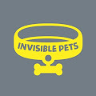 Invisible Pets NFT Official 欢迎 Invisible Pets 是一组独特、动画和可爱的 NFT。我们的使命是打造 NFT 领域最强大的品牌之一。 我们是一个社区驱动、艺术优先的项目，以我们对动物的热爱为中心
InvisibleBear 生活在以太坊区块链上的 10000 只隐形熊的集合InvisibleBear NFT - 常见问题（FAQ） ▶ 什么是隐形熊？ InvisibleBear 是一个 NFT（不可替代代币）集合。存
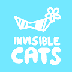 InvisibleCats 隐形猫是以太坊区块链上 5,000 个随机生成的 NFT 的集合。 Invisible Cats 持有者将在 Mint 开始后的 1 周内获得独家免费领取 Invisible Pets 掉落。这个系列是酷猫和隐形朋友的衍生品。In
InvisibleDoodles NFT 10k Drippy Doodles 隐藏在众目睽睽之下❤️ || 前 1000 个 NFT：免费铸币 || 休息：0.02 eth || 即时揭晓InvisibleDoodles NFT NFT - 问题常见 (FAQ) ▶ 什么是 InvisibleDoodles N
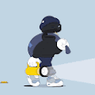 InvisibleFriends Specials Kith 是世界上最著名的生活方式品牌之一。我们非常高兴能与他们合作，雄心勃勃地在数字和物理之间架起一座桥梁。 Kith 首席执行官兼创意总监 Ronnie Fieg 与 Markus Magnusson 合作设
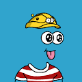 InvisibleLanders 过去 7 天没有售出 InvisibleLanders。3,333 个隐形着陆器，撒上一点 sartoshi。不隶属于 Invisible Friends 或 3Landers。 这是一个
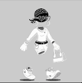 InvisibleWomen Invisible Women 的成立旨在为女性和未来女性树立成功掌握在自己手中的榜样。 启示：每个女人，无论是否出名，都能够付出她的勇气、力量、毅力或仅仅是她的幸福，这
Invisiverse Genesis 过去 7 天没有售出 Invisiverse Genesis。4010 Genesis Invisiverse 进入 NFT 空间！ ▶ 什么是 Invisiverse Genesis？ Invisiverse Genesis 是一个 NFT（不可替代令牌）集合。存储在区块链上的数
IO Imaginary Ones NFTs Imaginary Ones 是一个令人愉快的 3D 动画艺术，包含 8888 个独特的 NFT。Imaginary Ones 希望重新点燃您的火花，拥抱创造力并为您的梦想而努力。欢迎来到想象世
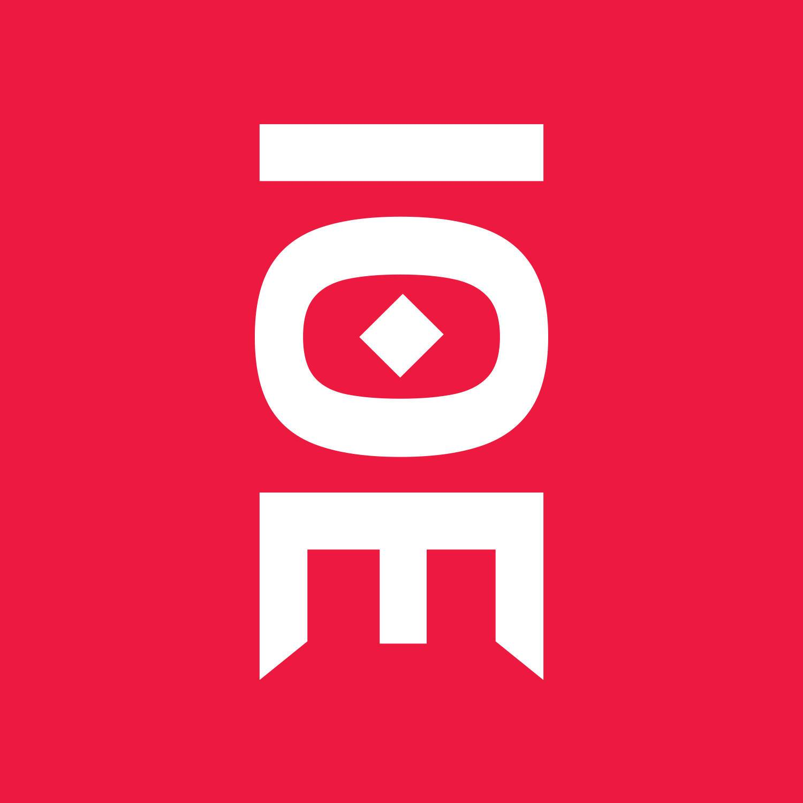 IO.E | The chosen 我们对 IO.E 的愿景是创建一个志同道合的个人社区，致力于在 NFT 空间中建立更好的标准。一个重视质量和社区高于一切的项目并引入信息学习，创造一个新老投资
iPollo Metaverse Pass by Nano Labs Nano Labs 于 2022 年 7 月推出的 iPollo Metaverse Pass 希望与更多家庭一起开启新的元界之旅。Nano Labs 是一个狂热的元宇宙探索者，在研发方面投入了多年。Nano Labs以其
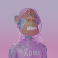 IRL Apes Club 欢迎来到 IRL Apes Society！加入我们的社区，征服元界。 IRL Apes Club NFT 在过去 7 天内售出 1 次。IRL Apes Club 的总销售额为 12.08 美元。一份 IRL Apes Club NFT 的平均价格为 12.1
iSeaMonsters iSea Monsters 是一个健康 NFT 集合，包含 8,888 个随机生成的怪物，可以与人类一起玩耍和训练。他们的目标是帮助社区过上更好、更健康的生活。iSea Monsters 是第一款将现实
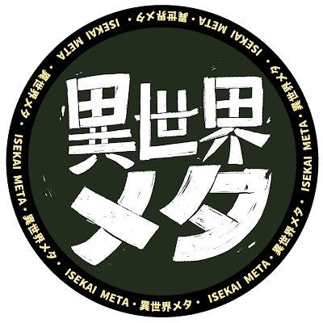 Isekai Meta - Official Isekai Meta 是一个故事和社区驱动的手绘 NFT 集合 + 虚拟宇宙品牌，它挖掘了人类通过故事与他人联系的基本需求。深受流行文化、低保真美学和日本动漫的影响。该项
Isekai Saga Early Participation Gift “伊势海传奇”的早期参与礼物。收集它们，可能会有好事发生！ “Isekai Saga”是一款完全链上的游戏，玩家在其中争夺碎片（NFT）。当一系
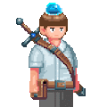 Isekai Truck Hero #1 Juvenile 在ISEKAI TRUCK(NFT & P2E Game)中，被卡车撞到的主人公遇到女神，转生到另一个世界。这是一款 P2E 游戏，您可以在其中遇到英雄并与他们一起进行各种冒险
Ishihara Plates “Ishihara Plates”是一个 NFT 系列，与传统的模拟 Ishihara 颜色测试平行运行：将功能实用程序提炼成具有自身艺术价值的物体。所有 Ishihara Plates 都是通过生
Islands Welcome Pass 此 NFT 授予您访问 Islands 社区的权限。在官网注册并链接您的钱包后，您将获得这个免费的 NFT 空投，允许您加入 Islands 社区页面上的对话。来到 Islands Life 并加入 web3 中最好的社区
Isolated Town By The Sea 海边的孤立小镇 总供应 2000 个 ITN，每个 ITN 都是独一无二的。公共造币厂是活的，价格是 0.005 每个， 现在造币厂。 ERC721A标准，铸币 20 和铸币 1 的 gas 成本
isotile Genesis LAND isotile 是一个基于以太坊区块链的去中心化在线虚拟世界，您可以在其中创建您的画廊房间来放置您的 NFT 并结识新的加密朋友！ Genesis Avatars NFT将只有9,000 个。 每
It's Full of Stars /22 这个想法瞬间从我脑海中飞出——将一英里的 0.000010561 投射到我的眼前，将更远的 0.000022990 投射到我的鼻尖……然后它飙升了 30,444 英里，一直飞
Itadakimasu Man 从前年开始，我每天都在拍自己吃午饭的照片。每天，我的午餐照片都会被铸造出来。我的午餐将由治理投票决定。社区见！ Itadakimasu Man NFT 在过去 7 天内售出 145 次。I
ItalianRedWineClub 意大利红酒俱乐部统计 2500 NFT ERC-721 2022 年 5 月开始预售罗马区块链周（50/2500 NFT） 2022 年 7 月 1 日上市（1000/2500 NFT） 2023 年 3 月 2 日上市（